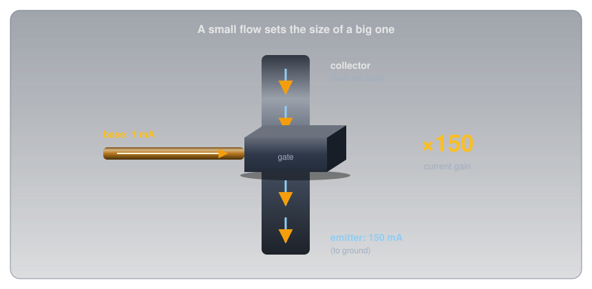
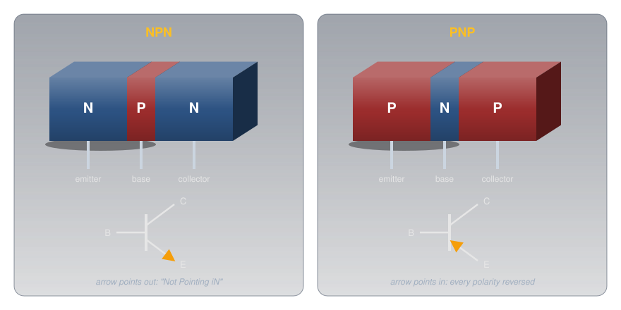
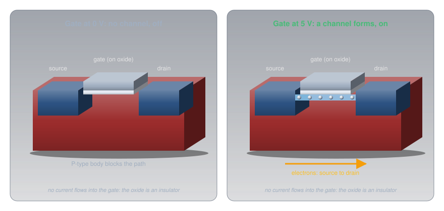
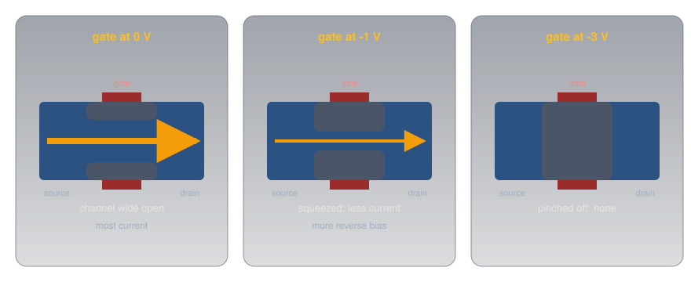
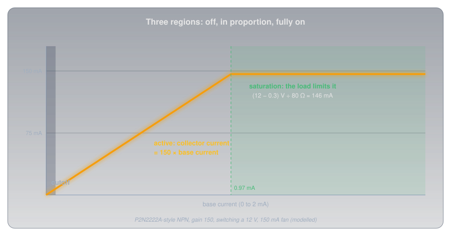
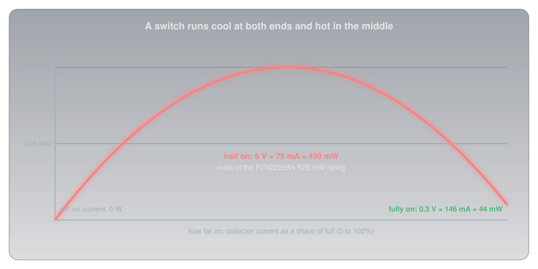
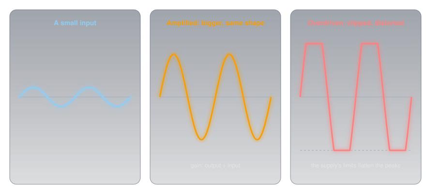
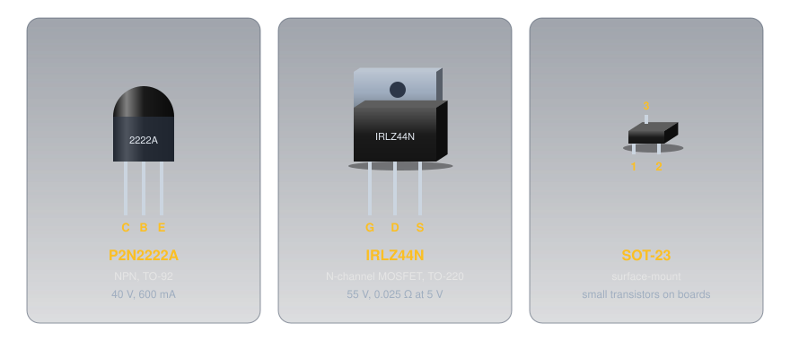

Transistors🔗
Beginner
This article is in the Components topic and follows Diodes and LEDs, whose PN junction is the transistor's building block. It uses Ohm's Law and Power throughout, and its examples are driven from the pins described in Digital Pins.
An Arduino Uno pin is rated for 20 mA at 5 V. A small 12 V cooling fan draws about 150 mA. That's seven times the current at more than twice the voltage, and connecting the fan straight to the pin would destroy the pin and leave the fan still. Yet a transistor in a package smaller than a pea lets that pin switch the fan on and off, and the pin barely notices.
Two ideas explain how:
- A transistor is a valve worked by a smaller valve. A small current into one terminal, or a voltage on it, controls a much larger current between the other two. In a bipolar transistor the large current is a fixed multiple of the small one; that multiple is its gain.
- How it's driven decides what it does. Driven fully on or fully off, a transistor is a switch, and it runs cool. Driven partway, the output follows the input in proportion, and it's an amplifier, which is also where the heat is.
Idea One: A Valve Worked by a Smaller Valve🔗
The picture is a wide water pipe with a gate in it, and a thin side pipe that works the gate. A trickle through the side pipe opens the gate in proportion, and a much larger flow passes through the main pipe.

A transistor is that arrangement in silicon, with three terminals. Two carry the main current; the third controls it. There are two great families, built differently, and both appear on the amateur radio exam.
Bipolar Transistors: NPN and PNP🔗
A bipolar junction transistor (BJT) is a three-layer sandwich of doped silicon: either N, P, N or P, N, P. The middle layer is very thin. Its three terminals are the emitter, the base (the thin middle), and the collector.

In an NPN transistor, a small current flowing into the base (forward-biasing the base-emitter junction, exactly like the diode in Diodes and LEDs) floods the thin base with electrons from the emitter. Most of them don't stop there: the base is so thin that they're swept straight on into the collector. The result is a collector current many times the base current:
The current gain, written hFE or β, is typically somewhere between 100 and 300 for a small transistor. onsemi's P2N2222A datasheet promises an hFE between 100 and 300 at 150 mA, a wide spread because no two transistors are quite alike. Good circuits are designed so the exact gain doesn't matter.
A PNP transistor is the mirror image: every polarity is reversed. Its emitter sits at the positive side, current flows out of its base to turn it on, and the arrow in its symbol points in. That's why a PNP can't simply replace an NPN in a circuit. The symbol's arrow marks the emitter and points the way conventional current flows through it; "NPN: Not Pointing iN" remembers which is which.
Field-Effect Transistors: Controlled by Voltage🔗
A field-effect transistor (FET) does the same job by a different mechanism: a voltage, rather than a current, controls the main current. Its terminals are the source, the gate, and the drain, and they map onto the bipolar transistor's: the source corresponds to the emitter, the gate to the base, and the drain to the collector. The main current flows through a channel of doped silicon between source and drain, either N-type (an N-channel FET) or P-type (a P-channel FET). Charge carriers enter the channel at the source and leave at the drain, which is where the names come from.
The most common kind is the MOSFET (metal-oxide-semiconductor FET). Its gate is a metal plate sitting on a layer of insulating oxide, so it's literally one plate of a tiny capacitor:

Put a positive voltage on an N-channel MOSFET's gate and its field draws electrons into the P-type silicon just under the oxide, forming an N-type channel that joins source to drain. Above the gate threshold voltage, current flows; below it, none does. Because the gate sits on an insulator, essentially no current flows into the gate once it's charged: Infineon rates the IRLZ44N's gate leakage at no more than 100 nA. That's what makes a FET a high-impedance device: it controls amps while drawing almost nothing from whatever drives it.
The older junction FET (JFET) uses a reverse-biased PN junction as its gate instead of an oxide layer. Its channel is open with the gate at 0 V, and more reverse bias on the gate widens the junction's depletion zone into the channel and squeezes it shut:

Idea Two: Switch or Amplifier🔗
Back to the NPN transistor driving the fan. As the base current rises from zero, the transistor passes through three regions:

- Cutoff: no base current, no collector current. The transistor is an open switch.
- Active: the collector current is hFE times the base current. Small changes in base current make proportionally larger changes in collector current. This is the amplifier region.
- Saturation: the transistor is fully on, with only a few tenths of a volt across it. More base current can't raise the collector current any further, because the load now limits it: the fan's 80 Ω across 12 V allows about 146 mA, and that's all there is.
A transistor driven back and forth between cutoff and saturation behaves like a switch, which is how almost every transistor in a computer and a microcontroller is used.
Why a Switch Must Be Fully On or Fully Off🔗
The transistor's own heat is the power across it: the voltage between collector and emitter times the current through it. That's what makes the middle region dangerous for a switch:

- Off: 12 V across it but no current: 0 W.
- Fully on: 146 mA through it, but the
P2N2222A's saturation voltage is at most 0.3 V: about 44 mW. - Half on: 6 V across it and 75 mA through it: 450 mW, ten times as much, and most of the part's 625 mW rating.
Excessive heat is the commonest way transistors die, and a switch left halfway on is the commonest way to cook one. Drive it hard into saturation, or not at all.
Switching the Fan with an NPN Transistor🔗
To be sure of saturation, designers don't rely on the typical gain. The P2N2222A datasheet guarantees its 0.3 V saturation voltage at 150 mA with a base current of 15 mA, a "forced gain" of just 10, and that's the usual rule of thumb for a hard switch.

The base-emitter junction is a diode, so the base sits about 0.8 V above ground when saturated. The base resistor gets the rest of the pin's 5 V:
That's within the pin's 20 mA rating, and the 146 mA through the fan comes from the 12 V supply, not the pin. The emitter connects to the same ground as the Arduino, so the two supplies share a reference. The diode across the fan is the flyback diode that catches the motor coil's spike when the transistor turns off.
Switching Bigger Loads with a MOSFET🔗
A bipolar transistor needs base current in proportion to its load: 15 mA to switch 150 mA, so a 2 A load would need 200 mA, ten times what the pin can give. A MOSFET's gate needs essentially none, so for anything heavier than a few hundred milliamps, a MOSFET is the better switch.

Three details matter:
- Choose a logic-level MOSFET. The gate threshold voltage is where the MOSFET starts to conduct, not where it's fully on. The
IRLZ44N's threshold is 1 V to 2 V, and Infineon specifies its on-resistance at 5 V on the gate (0.025 Ω) and at 4 V (0.035 Ω), so a 5 V pin turns it fully on. Many power MOSFETs are specified only at 10 V and run half-on, and hot, from a microcontroller pin. On a 3.3 V board, choose a part whose on-resistance is specified at 3.3 V or below; theIRLZ44N's isn't. - The gate resistor. The gate is a capacitor, so at the instant the pin switches it draws a brief rush of current to charge it. 220 Ω limits that to 5 ÷ 220 ≈ 23 mA for a moment.
- The pull-down. While an Arduino resets or boots, its pins are inputs, and a floating gate could leave the MOSFET half-on, the hottest place to be. The 10 kΩ holds the gate at 0 V until the sketch takes over, the same idea as Pull-up and Pull-down Resistors.
Fully on, a MOSFET behaves like a small resistor, so its heat is \( I^2 R \). At the fan's 146 mA, the IRLZ44N dissipates about half a milliwatt. At 5 A it would dissipate 0.625 W, and with no heatsink its junction-to-air thermal resistance of 62 °C per watt means a rise of about 39 °C: warm, but fine. The headline "47 A" on the datasheet assumes the case is held at 25 °C on a large heatsink, which a hobby build never achieves.
Amplifying🔗
In the active region, the output follows the input in proportion. A small varying current into the base produces a collector current hFE times larger with the same shape, and a resistor in the collector turns that current into a voltage. That's an amplifier, a circuit that increases the size (the amplitude) of a signal. How much bigger is its gain, the ratio of output to input, which can be a voltage gain, a current gain, or a power gain, and is often quoted in decibels.

A good amplifier is linear: twice the input gives twice the output, so the shape is preserved. Push it too hard and the output runs into saturation at one end and cutoff at the other, the peaks are flattened, and the signal is distorted. Two other properties come up constantly:
- Efficiency is the useful output power divided by the DC power the amplifier draws from its supply. The rest becomes heat in the transistors.
- Feedback is part of the output fed back to the input. Fed back in opposition (negative feedback), it makes an amplifier more stable and linear. Fed back in step (positive feedback), enough of it makes the amplifier feed itself, and it oscillates: it produces a signal of its own, which is exactly how radio transmitters and every clock in a microcontroller generate their frequencies.
Designing amplifiers is a subject of its own; what matters here is that it's the same transistor, driven in its middle region instead of at its ends.
The Parts You'll Meet🔗
A handful of transistors cover nearly every hobby job, and the pin order differs from part to part, so always check the datasheet's pinout before wiring one.

P2N2222A's order is C, B, E; the older metal-can 2N2222A and many similar parts use E, B, C. Check every time.-
Small-signal NPN and PNP
P2N2222A(NPN: 40 V, 600 mA, 625 mW) and its PNP partners in the same TO-92 shape (Package Types covers the packages).Use: switching LEDs, relays, and small fans; amplifying audio and radio signals. Its 300 MHz gain-bandwidth product makes it useful well into radio frequencies.
-
Logic-level power MOSFET
IRLZ44N(N-channel: 55 V, 0.025 Ω at a 5 V gate).Use: switching motors, LED strips, heaters, and solenoids straight from a microcontroller pin.
-
P-channel MOSFET and PNP
The mirror images, with every polarity reversed.
Use: switching on the positive side of a load (high-side), such as cutting power to a whole section of a circuit.
-
JFET
Normally on, turned off by reverse bias on its gate; very high input impedance.
Use: the input stages of test instruments, microphones, and sensitive radio receivers.
Testing a Transistor🔗
The diode-test mode from Diodes and LEDs checks a bipolar transistor, because it's two junctions sharing a base. On an NPN, with the red probe on the base, both the base-emitter and base-collector junctions read about 0.6 V to 0.7 V, and reversed they read OL. Between collector and emitter it should read OL both ways. A low reading between collector and emitter means the transistor has failed short, the usual result of overheating. Some multimeters also have an hFE socket that measures gain directly. MOSFETs are harder to test in this simple way, and their gates can be damaged by static, so handle loose ones by the package rather than the leads.
Safety🔗
Transistors at hobby voltages can't hurt you, but they can destroy themselves, and the circuits they switch.
Heat, Flyback, and Ratings
Keep a switching transistor fully on or fully off; partway is where it overheats. Check the power: \( V_{CE} \times I_C \) for a bipolar transistor, \( I^2 R_{DS(on)} \) for a MOSFET, and add a heatsink if it's more than about a watt in a TO-220. Always fit a flyback diode across a motor, relay, or solenoid. Stay inside the voltage and current ratings: the P2N2222A is rated for 40 V and 600 mA, and its 625 mW is at 25 °C ambient, falling by 5 mW for every degree warmer. Anything switching mains belongs in a properly rated, enclosed module, never on a breadboard.
Practice🔗
1. How Much Collector Current?
An NPN transistor with a gain of 200, operating in its active region, has 0.4 mA flowing into its base. What's the collector current?
Solution
\( I_C = h_{FE} \times I_B = 200 \times 0.4\ \text{mA} = 80\ \text{mA} \), as long as the load allows that much; if it doesn't, the transistor saturates and the load sets the current.
2. Size the Base Resistor
A P2N2222A will switch a 12 V relay coil drawing 60 mA from a 5 V pin. Using a forced gain of 10 and 0.8 V for the base, what base resistor?
Solution
The base needs 60 ÷ 10 = 6 mA. \( R_B = (5 - 0.8) / 0.006 = 700\ \Omega \); the next E12 value down, 680 Ω, gives 6.2 mA and guarantees saturation (rounding up would starve the base). Fit a flyback diode across the coil.
3. Which Terminal Is Which?
Match each bipolar terminal to its field-effect equivalent.
Solution
Emitter ↔ source, base ↔ gate, collector ↔ drain. In both, the control terminal is the middle one in the list, and the main current flows between the other two.
4. Why Did It Get Hot?
A MOSFET specified only at a 10 V gate is driven from a 5 V Arduino pin to switch a 3 A load, and it gets too hot to touch. What's wrong, and what's the fix?
Solution
At 5 V on the gate it isn't fully on: it's in the region between off and on, with both voltage and current across it, so it dissipates far more than its datasheet on-resistance suggests. Use a logic-level MOSFET whose on-resistance is specified at 5 V (or lower), such as the IRLZ44N.
5. JFET Direction
An N-channel JFET's gate is at −2 V. What happens to the drain current if the gate moves to −1 V?
Solution
It increases. Less reverse bias shrinks the depletion zone, widening the channel.
6. Distortion
An amplifier's output looks like the input on small signals, but on loud passages the peaks come out flattened. What's happening?
Solution
On large signals the transistor is being driven out of its linear active region into saturation and cutoff, so the output can't swing any further and the peaks are clipped: the amplifier has become non-linear and the output is distorted. Reduce the input, or lower the gain.
Quick Recap🔗
-
A valve worked by a valve
A small current (BJT) or voltage (FET) controls a much larger current.
-
Bipolar: C, B, E
NPN or PNP, with polarities reversed. \( I_C = h_{FE} \times I_B \) in the active region.
-
Field-effect: D, G, S
N- or P-channel. MOSFET gates draw almost no current; a JFET is opened by reducing reverse bias.
-
Three regions
Cutoff (off), active (amplifier), saturation (fully on, current set by the load).
-
Switches run cool
Fully on or fully off. Halfway on is where transistors overheat and fail.
-
Driving loads
BJT: base resistor for a forced gain of 10. Bigger loads: a logic-level MOSFET with a gate resistor and pull-down. Always a flyback diode on coils.
-
Amplifiers
Gain = output ÷ input. Overdriven means distorted; positive feedback means oscillation; efficiency is output ÷ DC input.
-
Check the pinout
Pin order varies between parts, even with the same number.
What's Next🔗
Before the transistor, the same jobs were done by glass tubes with the air pumped out. Vacuum Tubes shows how a heated cathode and a wire grid make a voltage-controlled amplifier, why it behaves so like a FET, and why tubes are still made.
Further Reading🔗
Datasheets
- onsemi P2N2222A NPN Transistor (PDF) — gain, saturation voltage, ratings, and the C-B-E pinout
- Infineon IRLZ44N Logic-Level MOSFET (PDF) — on-resistance at 5 V and 4 V, gate threshold, and thermal resistance
Deep Dives
- Bipolar Junction Transistor — Wikipedia — how the thin base works, and the operating regions
- MOSFET — Wikipedia — enhancement and depletion types, and the gate as a capacitor
- JFET — Wikipedia — the junction gate and pinch-off
Related Articles
- Diodes and LEDs — the PN junction, and the flyback diode every switched coil needs
- Digital Pins — the pin's 20 mA limit that makes a transistor necessary
- Capacitors — the gate of a MOSFET is one
- Package Types — TO-92, TO-220, and SOT-23